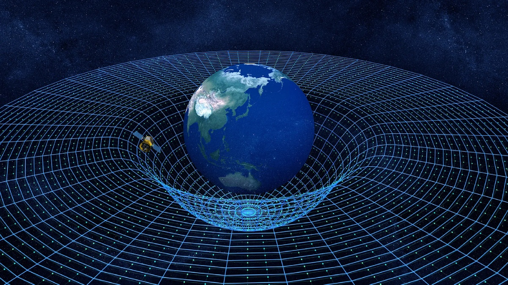
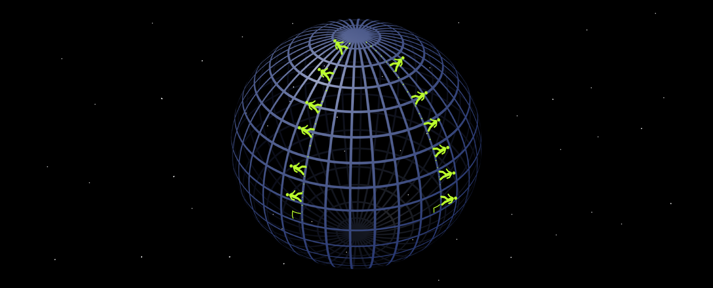

The force of gravity does not exist. WHAAA!
Yes, yes, gravity (in the way most people think of it) is not real. The Earth does not pull on you. It's not attracted to you, the Sun, or anything else. It's merely an illusion of something much more complex. To understand it, we need to familiarize ourselves with Einstein's Theory of General Relativity.
Einstein's Theory of General Relativity posits that there is this thing called spacetime, which basically means our three dimensions—up/down, left/right, and forward/backward—are not independent of time. They're all knit together into four dimensions. These dimensions can be warped by mass and energy. We all have mass, meaning we all curve spacetime. That curvature, however, is negligible unless we start talking about large celestial objects, such as planets and stars. These gargantuan objects bend the literal fabric of space. This is not science fiction, by the way.
This warping of spacetime is gravity. Let's, for a moment, talk about satellites. Satellites orbit Earth in a circle. When asked why they go around the Earth like that, people say it's because the Earth is pulling on them. But this is not true. The satellite (from its point of view) is going straight. It's following a straight path in spacetime, but because spacetime is curved, from an outside perspective, it looks as though it is going in circles due to the Earth's gravity. But it's not. The satellite is following a straight path in spacetime's geometry.

Still not making sense? Think of the Earth (NOT ITS GRAVITY). If two people start at the equator and walk in a straight line north, they end up meeting at the North Pole. This isn't because someone turned midway through—it's because the Earth is a sphere. That sphere is a curved plane. They were walking straight on the plane, but the plane was warped into a sphere, causing them to end up at the same point.

Going back to the satellite, it's moving straight in the fabric of spacetime, but since spacetime is warped, it ends up looping in circles.